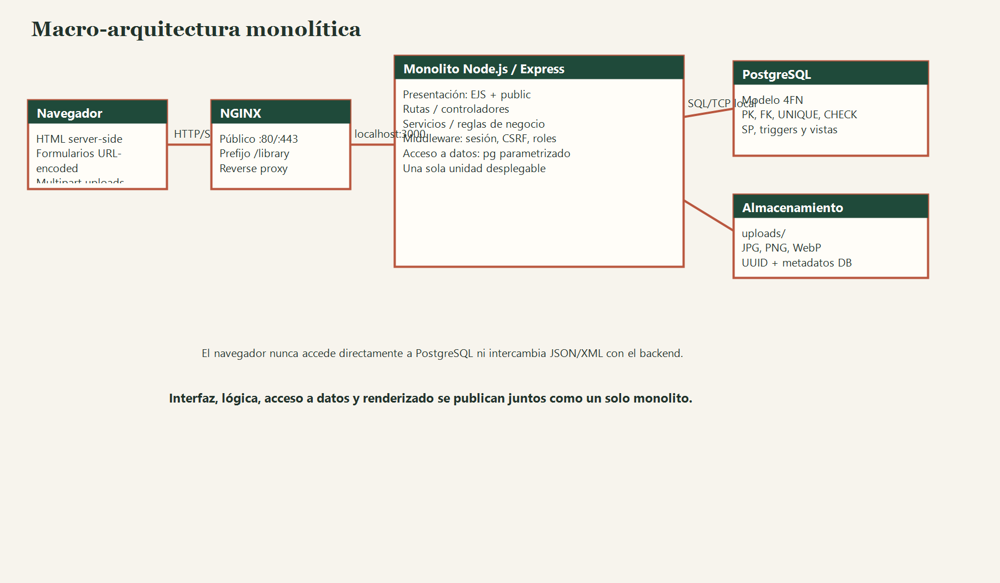
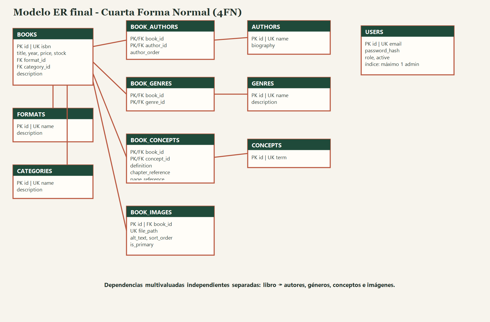

Login y registro.
01
Objetivo y alcance
Construir en CentOS Stream 10 una unidad desplegable que autentica usuarios, renderiza HTML, administra un catálogo normalizado hasta 4FN, maneja imágenes y conserva definiciones contextuales. El alcance excluye APIs, microservicios y formatos JSON/XML de intercambio.
Catálogo, búsqueda, libro y conceptos.
CRUD completo y relaciones.
02
Análisis de requisitos
Se definieron 14 requisitos funcionales y 10 no funcionales, con criterios de aceptación, actores, rechazos esperados, supuestos y riesgos iniciales.
Abrir requisitos →03
Decisiones de arquitectura

NGINX publica /library; Node escucha exclusivamente en 127.0.0.1:3000. Presentación, rutas, servicios, middleware y acceso a datos se despliegan juntos.
04
Diseño de datos y 4FN

Las dependencias multivaluadas de autores, géneros, conceptos e imágenes se separan para evitar combinaciones espurias. La definición, capítulo y página dependen de libro + concepto.
05
Infraestructura GCP y PostgreSQL
Compute Engine con CentOS Stream 10, una VM e2-small y firewall sólo para 80/443. library_app posee su base pero no es superusuario ni crea bases o roles.
Evidencia pendiente del estudiante
Comandos reproducibles →Agrega captura censurada de la VM, firewall, \du library_app, conteos y objetos PostgreSQL.
06
Módulos del monolito
07
Funcionalidades
- Registro, login, logout y sesiones
- Búsqueda por título o ISBN
- CRUD de libros, usuarios y catálogos
- Autores y géneros N:M
- Conceptos Cloud Computing con referencias
- JPG, PNG y WebP con portada y texto alternativo
08
Seguridad y roles
Bcrypt, CSRF, SQL parametrizado, Helmet, sesión PostgreSQL, autorización por rol, uploads con UUID y límites, mensajes controlados, secretos fuera de Git y administrador único protegido en DB.
Revisión de 12 amenazas →09
Plan y resultados de pruebas
La matriz contiene 24 casos positivos, negativos, de autorización, integridad, archivos, inyección y despliegue. Los resultados que requieren VM se distinguen explícitamente de la validación estática.
Descargar matriz Excel →Capturas pendientes
Completar TP-02, 03, 06, 08, 09, 12, 15, 20 y 24 con entrada, resultado y conclusión.
10
Despliegue NGINX
Systemd mantiene el proceso Node; NGINX conserva el prefijo y transmite las cabeceras originales. TLS debe configurarse antes de producción real.
Guía de despliegue →11
Evidencias explicadas
[Insertar captura y explicar SQLSTATE.]
[Insertar captura y explicar flujo.]
[Insertar captura externa y verificar recursos.]
12
Problemas, soluciones y evolución
La principal tensión fue conceder a library_app creación total dentro de su base sin convertirlo en superusuario. Se resolvió haciéndolo propietario sólo de online_library. Una evolución gradual movería imágenes a objetos, añadiría paginación/trigramas y separaría API únicamente ante múltiples clientes.
13
Uso responsable de IA
Se conserva el prompt exacto de una mejora pequeña, archivos afectados, riesgo, pruebas y resultado. Las pruebas no ejecutadas se marcan como pendientes.
14
Conclusiones
El monolito modular minimiza complejidad operativa sin sacrificar separación de responsabilidades. PostgreSQL protege invariantes que no deben depender exclusivamente de la interfaz. La 4FN conserva hechos multivaluados sin listas ni redundancia.
15